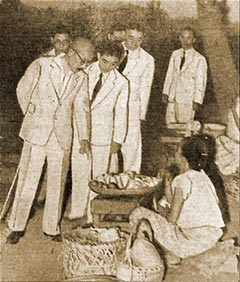

|
j
a v a s c r i p t |
May 8, 1943
First time a Japanese carrier (about 15,000 tons) and cruisers are in the Bay — all outside the breakwater. The talk this morning is of reports that Tunis and Bizerta have been taken. I was at Gabby's office at 1100 when he took a business call, mentioned a particular brand of medicine, put the phone down and announced: "It's confirmed." (And I've just won a P10 bet from Paco Gutierrez.)

Tojo Talks
(to a peanut vendor) Every columnist had to do a piece on Tojo. Maharajah: "His Excellency ... trod through the crowd ... and the people who saw him so close were dazed, dumbfounded...." Icasiano called him the Gran Tatay [great father] of East Asia. Tribune Director José P. Bautista described his physique and clothes, and reminded us that Laurel's son was at a Military Academy in Japan when Tojo was assistant superintendent there. They were together at Manchukuo too. The most sinister comment on Tojo's visit is from Pedro Aunario: "Indeed, the blood of our children is not too precious to be asked in the cause of that common [East Asian] destiny." |
|
|
|
|